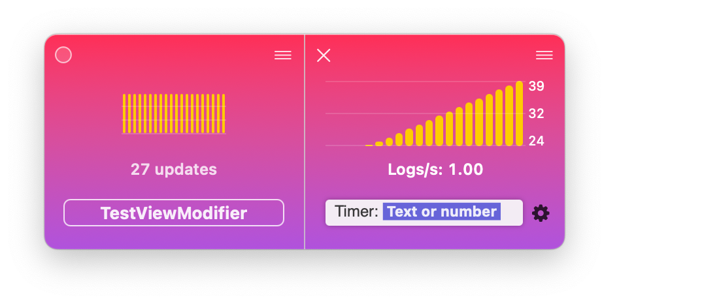

Automate debugging SwiftUI and UIKit with dataFude

The ability to log values and visualize them in dataFude is quite powerful, but the core concept of the app really shines when a developer automates logs that drive metrics over time.
Such metrics could be any value that changes over time, such as the size of the app cache, the amount of RAM consumed, or the number of instances created of a given class.
This article will look at two quite different approaches to tracking automation, one with SwiftUI and another with UIKit. Let’s start with SwiftUI first.
SwiftUI modifier to track view rendering
In this article we’ll look at logging the number of times a SwiftUI view is re-created. This is useful when you’re trying to track down unexpected state changes that cause your SwiftUI views to be recreated.
In its essence the view modifier will be a counter that will increment any time SwiftUI calls it during creating the view.
Let’s start by creating a serial queue called debugRenderQueue to do the logging and a dictionary to keep all the counters:
|
|
Next, let’s add a new method on View called debugRender(...):
|
|
You can add this modifier to any view in code and it’ll keep count of redraws.
Let’s give that a try! Let’s look at a Timer-driven clock view in SwiftUI:
|
|
The timer updates the time state property with the current time 10 times per second (the 0.1 cadence of the timer in the code above), and the view picks up the new state and displays the time:
When it comes to improving your app’s performance, you might like to check whether the view is redrawn 10 times per second (as often as you update the time property) or just once when the time value actually changes.
This is where using the new modifier from above comes handy. If you add the debugRender() modifier you’ll see the updates in dataFude right away:
|
|
And to make the data even easier to read — click the tile menu and select “View as chart” and then click on the tile subtitle to see how many logs per second it displays:
And now you have your answer — the tile updates once per second, therefore SwiftUI only recreates the view when the state actually changes.
Automatically track view controllers’ state in UIKit
Now let’s switch gears and look at UIKit. UIKit classes are Objective-C types inheriting NSObject so logging automation is even easier thanks to the almost unlimited possibilities for swizzling.
Long story short, in a UIKit app you don’t need to add a modifier or a function call anywhere — you can, for example, automatically track the state of all view controllers.
You can write your own swizzling code but for this article I’ll use @steipete’s InterposeKit.
In the app’s AppDelegate.init() let’s add an IntreposeKit call to swizzle UIViewController.viewDidAppear(_) and UIViewController.viewDidDisappear(_). The code is a bit verbose but the two important lines are the ones getting the current controller’s name and logging true when presented and false when dismissed:
|
|
The code injects couple of new lines into UIViewController.viewDidAppear(...) and UIViewController.viewDidDisappear(...) that get the current class name and write to the log something like:
MainViewController: true
MainViewController: false
DetailsViewController: true
DetailsViewController: false
...
Let’s give this code a try with a test app that presents two different view controllers — one for “details” and one for “more information”.
There’s no need to add any more code than the block above which, as said, tracks the presentation state of any of your view controllers:

You can track as many view controllers as you’d like this way — you’re only limited by how many tiles fit on your screen.
This kind of automation can be very useful for example to verify that all instances of an object have been released from memory. Or when tracking the state of a whole class of objects like with the view controllers above.
What other SwiftUI view modifiers or UIKit extensions that talk to dataFude would you like to use? Get in touch at https://twitter.com/icanzilb or https://mastodon.social/@icanzilb.